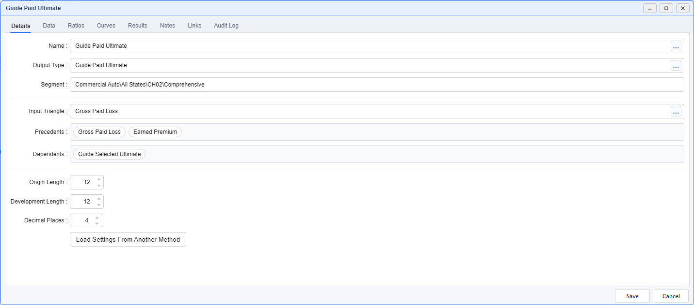
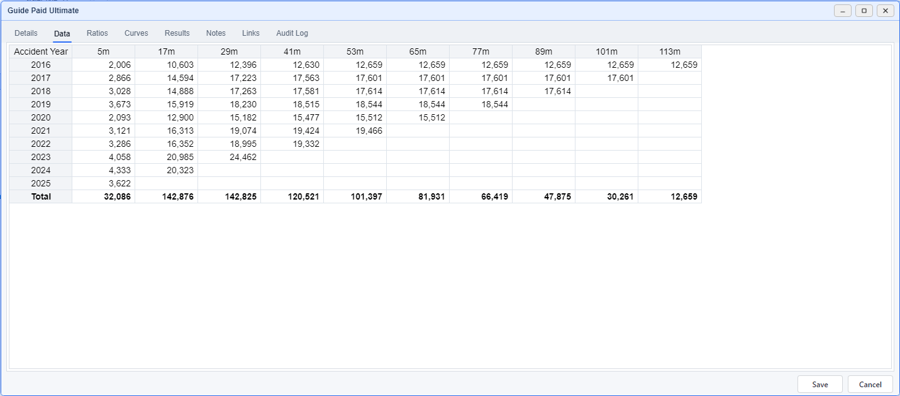
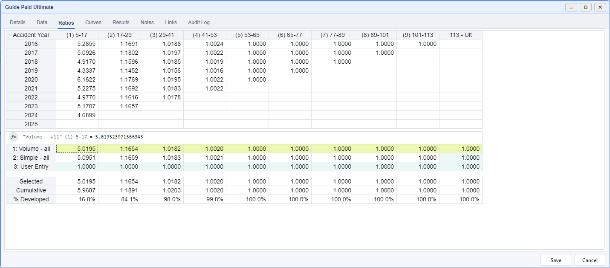
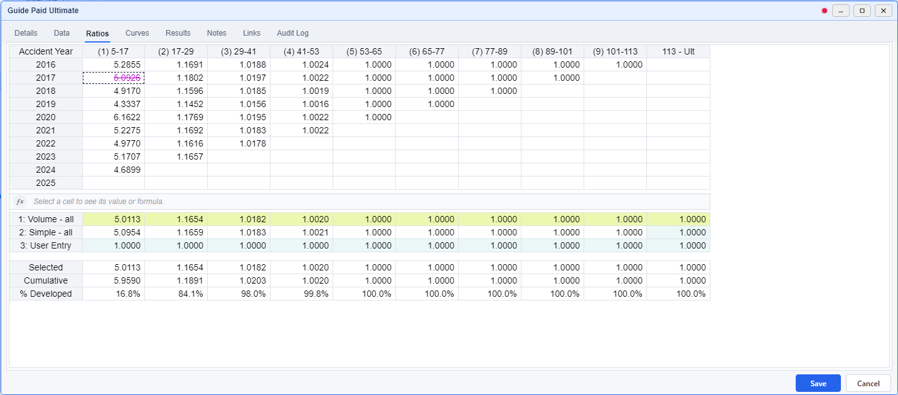
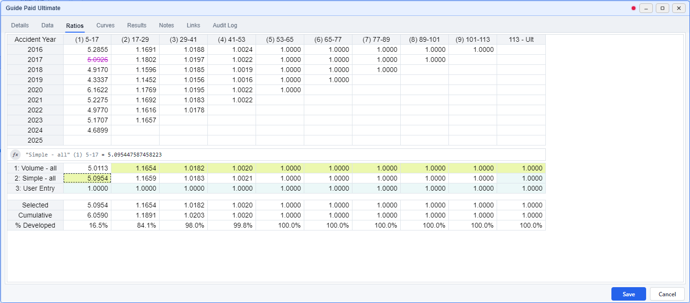
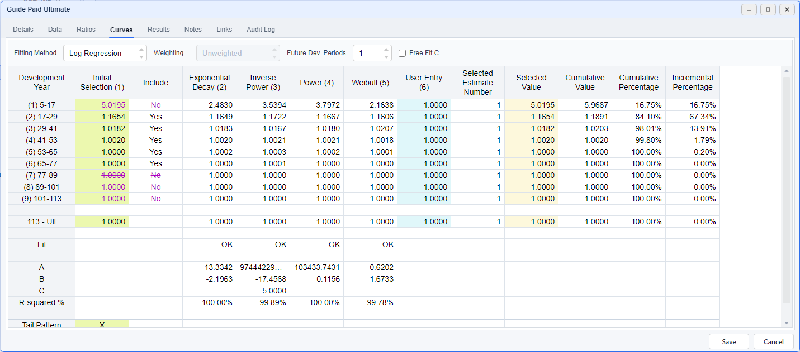
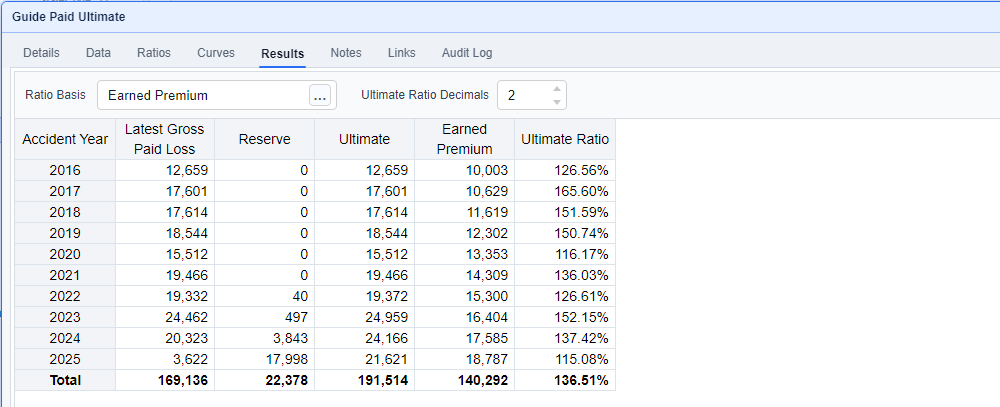
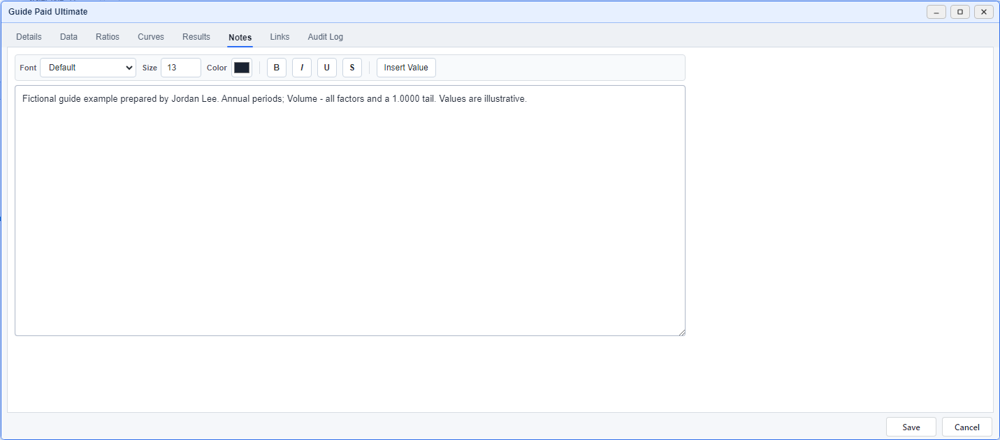

Development Factor Method
Review factors and save an ultimate
Develop Gross Paid Loss into an ultimate vector, compare factor selections, and review the result against Earned Premium. These screenshots follow the saved Guide Paid Ultimate example.
Use the In-Window Guide
Click the question-mark button at the top right to outline the DFM components you can explore. Numbered help markers follow you through all eight tabs.
Hover an outlined component, or focus/click its marker, to read a short tooltip. Explore one component at a time while keeping the full page width.
Click the question mark again or press Esc to turn the guide off. Guide mode lasts for the current window only and does not edit or save your method.
The hints also reveal shortcuts and context menus: double-click a development-column header on Ratios to open its interactive selection chart. Right-click the observed triangle, an average row label, an average value cell or the selected-pattern table for different actions. These include cell notes, custom averages, copying/applying patterns, plotting and colors. On Curves, right-click to add a user column and double-click one of its factor values to edit it. Right-click a tab to pop it out; right-click it again to dock it.
Customize Table Appearance
Right-click a table and choose Table Appearance…. Each section has Font Family, Size, B (bold) and I (italic) controls alongside its text and fill colors. Cell Border controls its color and width.
For example, press B under Average Formulas to make only that section bold. Use All Ratios Tables or All Tables for broader settings; a section's own choice takes priority. Font sizes are in pixels, and font names must be installed on your PC.
Changes appear immediately and are remembered for your user. A section's Reset clears its font choices; Reset all clears the shown fonts and colors. These settings do not edit your method.
Open or Create Your Method
In Project Page, select Commercial Auto → All States → CH02 → Comprehensive. Double-click the Guide Paid Ultimate row with Method Type DFM to inspect the finished example.
To create a practice method, right-click Gross Paid Loss and choose Add → DFM, as shown in the Project Page walkthrough. Complete its Details:
- Enter My Paid DFM in Name. This identifies your practice method and its output in the dataset table.
- Use the … button beside Output Type and choose Guide Paid Ultimate.
- Check the inherited Segment and Input Triangle: Gross Paid Loss.
- Set Origin Length and Development Length to 12, and Decimal Places to 4.
- Choose the Data tab to check the triangle before selecting factors.

Check the Input Triangle
On Data, review the origin years, development ages and cumulative Gross Paid Loss values. The example has origins 2016–2025 and a May 2026 valuation, so its development labels run from 5m through 113m at 12-month intervals.

If the input or period lengths are wrong, return to Details and correct them before continuing.
Exclude a Ratio and Compare a Selection
The upper table contains observed age-to-age ratios. Below it, the average rows offer candidate factors. A highlighted selected-factor cell identifies the factor chosen for that development period; a struck-through ratio is excluded from the averages.
Right-click within Ratios. If the menu offers Switch to Edit Mode, choose it. If it offers Switch to Select Mode, Edit mode is already active. The app remembers your last mode.
- Find origin 2017 and the first development column, (1) 5-17, in the upper ratio table.
- Click that ratio once. Check its strike-through and the recalculated averages below.
- In the lower average table, click the first development cell on Simple - all. Its selected-factor highlight shows the chosen factor for that period; other periods retain their selections.



Restore the Example Before Continuing
Click the struck-through 2017 / (1) 5-17 ratio again to include it. Then click the Volume - all row label to select that average across the development columns. The Curves and Results screenshots below show this restored pattern.
For a single recent Ratios edit, use Ctrl + Z to undo or Ctrl + Y to redo. Double-click a development column header to inspect its ratio chart.
Use Select Mode when highlighting a range to copy. A range outline is a temporary grid selection; the selected-factor highlight identifies the factor used by the method. Choose Show Data from the right-click menu to display observed values alongside ratios.
Review the Pattern and Tail
Open Curves. Initial Selection carries the factors chosen on Ratios. Keep it selected for this walkthrough, then read the Selected Value, cumulative values and percentages across the table.

The final 113 - Ult period is the tail. This example uses 1.0000. On Ratios, each average row has its own tail entry; review the rightmost column when choosing an entire row.
Include controls curve fitting. A factor excluded from the fit can still be chosen as a Selected Value and contribute to Results. Read Include and the selected-factor highlight separately; they represent different decisions.
To explore fitted curves later, click a curve value to choose it for one period, or its column header to choose it across periods. Clicking an Include cell changes which Initial Selection factors enter the fit. Curves edits are outside the Ratios undo history, so review your choices before saving.
Review Ultimates and Reserves
- Choose Results and inspect each origin's Latest Gross Paid Loss, Reserve and Ultimate.
- Use the … button beside Ratio Basis to choose Earned Premium. It is already selected in the finished example.
- Keep Ultimate Ratio Decimals at 2, then check the Ultimate Ratio by origin and in the Total row.

Results responds to your selections. If your practice method differs from this picture, first check its Details, ratio exclusions, selected average cells and Curves selections.
Record Your Rationale and Save
- Open Notes. Record the input, why you chose the averages, any exclusions and your tail assumption. The demo uses fictional reviewer Jordan Lee and illustrative amounts.
- Choose Save at the bottom of the method window and wait for the save to finish. The method window stays open.
- Close the saved window. In Project Page, find My Paid DFM if you created a practice method, or Guide Paid Ultimate for the finished sample.
- Double-click its DFM row to reopen it. Check Ratios, Results and Notes to confirm the saved work.

Leave Without Saving
Cancel closes the method. When there are unsaved changes, the confirmation says they will be discarded and the window will close. Choose No to return to your edits, or Yes to discard them and close. Reopen the method from Project Page to return to its saved version.
If Save reports an error, keep the method open, read the message and resolve the issue before closing. If the output is marked as needing review, inspect its inputs and selections, then explicitly Save the method to complete the review.
Find Your Way Around the Tabs
- Details: method identity, input, period lengths and related datasets.
- Data: the input triangle used by the method.
- Ratios: observed factors, exclusions, averages and factor selections.
- Curves: fitted patterns, selected development values and tail.
- Results: latest values, reserves, ultimates and the optional Ratio Basis.
- Notes: your assumptions and review rationale.
- Links: Excel references used by Ratios User Entry formulas. Find related datasets under Precedents and Dependents on Details.
- Audit Log: the saved output's change history.
Use Ctrl + PageDown or Ctrl + PageUp to move between tabs.